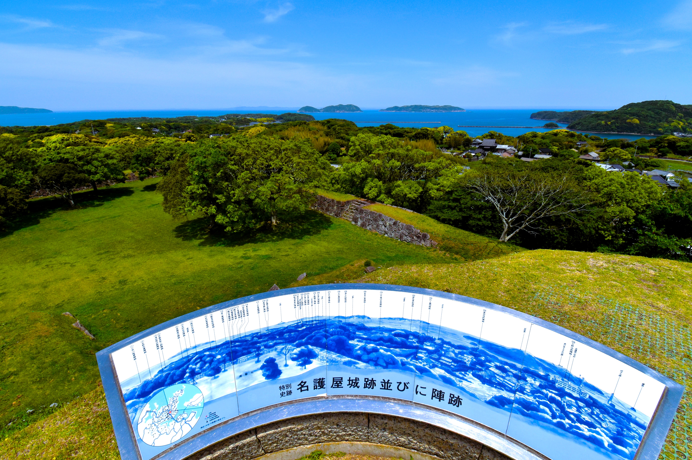
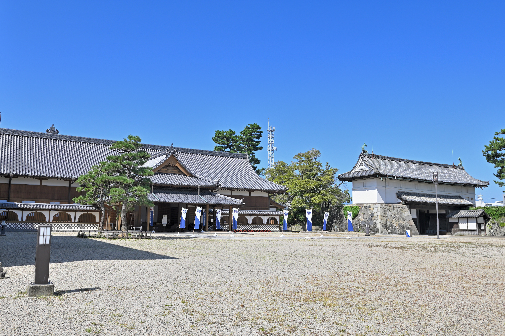
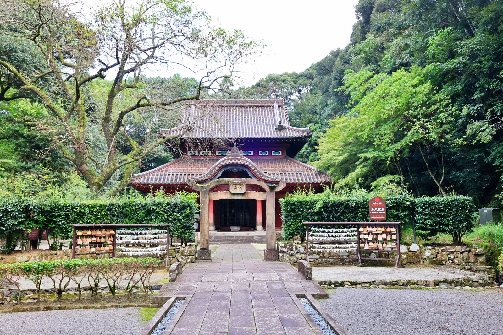
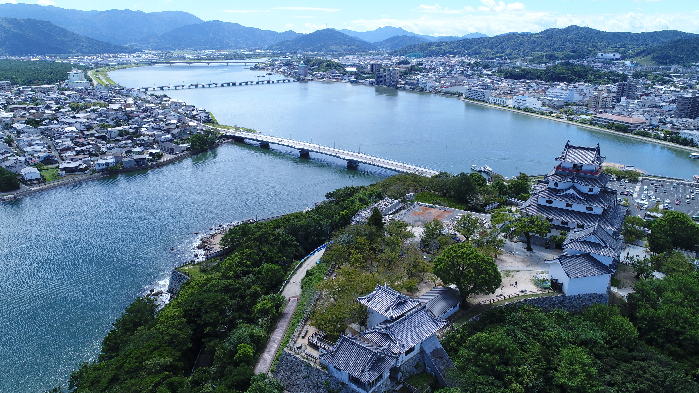
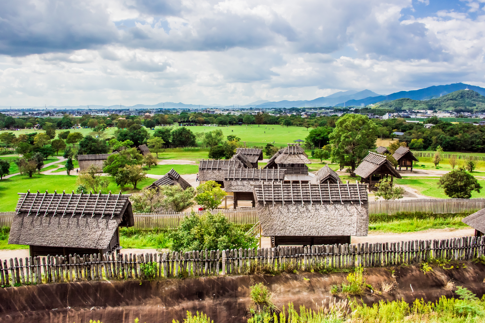
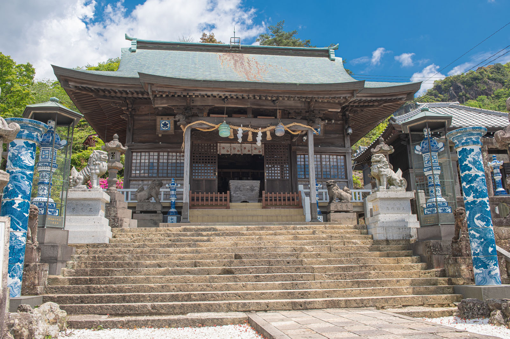
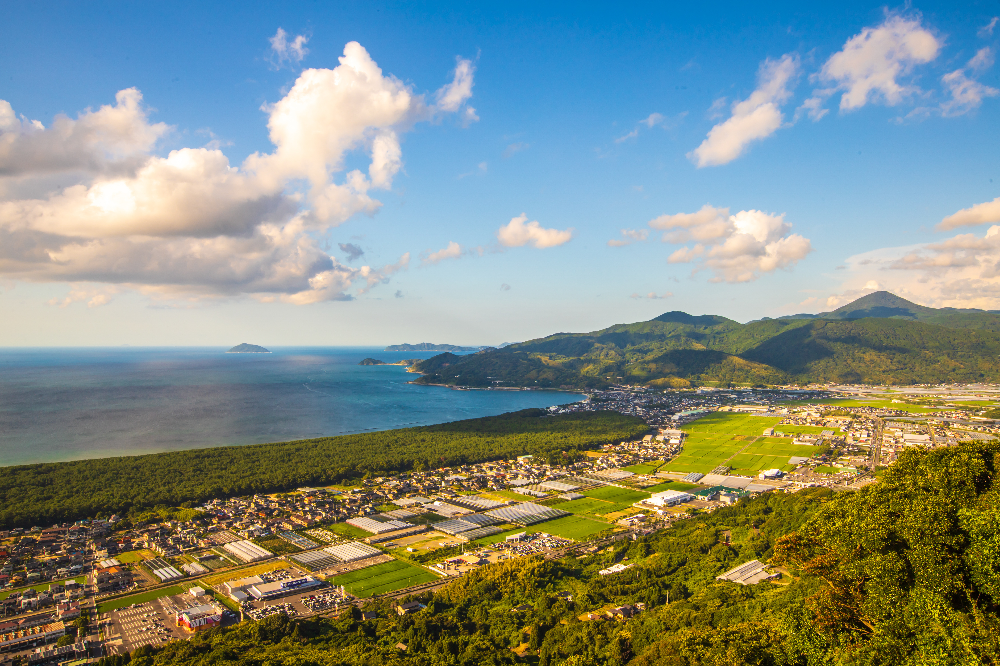

伊万里川
伊万里の街を流れる川。水辺を眺めながら、 ゆっくりと街歩きを楽しめます。
自然・絶景、歴史・文化、街並み、レジャースポットなど、
佐賀のさまざまな魅力を紹介します。
伊万里の街を流れる川。水辺を眺めながら、 ゆっくりと街歩きを楽しめます。

山々に囲まれた焼き物の里。 美しい自然と伊万里焼の歴史を感じながら散策できます。

穏やかな海と美しい砂浜が広がるビーチ。 海を眺めながら、のんびりとした時間を楽しめます。

豊臣秀吉の朝鮮出兵の拠点として築かれた城跡。 今も残る石垣を巡りながら、壮大な歴史を感じられます。

佐賀城本丸跡に建つ歴史館。復元された本丸御殿を見学しながら、 佐賀藩の歴史や文化について知ることができます。

孔子を祀るために建てられた歴史ある多久聖廟。 中国の建築様式を取り入れた美しい建物や彫刻を見ることができます。

伊万里焼の窯元が集まる大川内山。山々に囲まれた風情ある街並みを歩きながら、 窯元巡りや焼き物選びを楽しめます。

歴史ある温泉地として知られる嬉野温泉。温泉街を散策しながら、 足湯や名物の温泉湯どうふなど、嬉野ならではの魅力を楽しめます。

唐津城を中心に歴史ある街並みが広がるエリア。 城下町を散策しながら、唐津の歴史や文化を感じることができます。

弥生時代の大規模な環濠集落を復元した公園。 竪穴住居や物見やぐらなどを巡りながら、当時の暮らしや文化を体感できます。

有田焼の街を見下ろす高台に建つ、1658年建立の歴史ある神社です。 境内には陶器製の鳥居や狛犬、灯篭などが点在し焼き物の町・有田ならではの歴史と文化を感じることができます。

唐津湾沿いに美しい松林が続く虹の松原。 木々に囲まれた道を走りながら、爽やかな景色を楽しめます。
ここで紹介した以外にも、佐賀には心を動かす魅力がたくさんあります。
季節ごとのイベントやグルメ、穴場スポットもぜひ見つけてください。
あなたのお気に入りの場所がきっと見つかります。